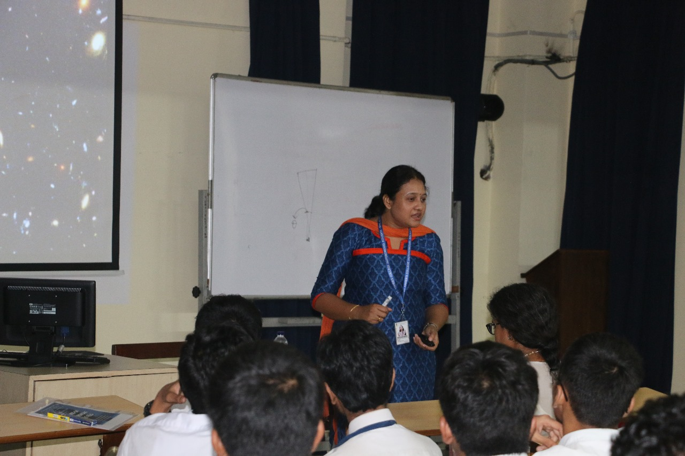

The Postgraduate and Research Department of Physics, in association with the Xaverian Astronomical Society of St. Xavier’s College, Kolkata, organised a summer workshop titled Hands-On Astronomy at F.E.L.O. for students of Classes XI and XII of St. Xavier’s Collegiate School. Held on 7th and 8th July 2023, the workshop aimed to introduce students to fundamental concepts of Astronomy and Cosmology while encouraging interest in scientific research and space exploration through interactive learning.

Workshop Proceedings
The workshop commenced on 7th July 2023 with an inaugural ceremony held in Room No. 15 at 1:00 p.m. Reverend Fr. Principal Dr. Dominic Savio SJ delivered the inaugural address in the presence of the Vice-Principal, the Deans of Arts and Science, the former Dean of Science, and the Head of the Department of Physics, Dr. Shibaji Banerjee. Following the addresses, students were escorted to MCVA 3 for the academic sessions. Dr. Suparna Roy Chowdhury delivered an engaging lecture on Astrophysics and Astronomy, followed by Dr. Shibaji Banerjee’s lecture on Cosmology after the lunch break.
The lectures were followed by a much-anticipated hands-on session at the Father Eugene Lafont Observatory. Despite unfavourable weather conditions, students were introduced to the observatory instruments and trained in handling telescopes and related equipment, concluding the first day on a highly engaging note.
Conclusion & Feedback
The second day of the workshop, held on 8th July 2023, began at 12 noon and featured interactive hands-on Astronomy sessions and a Cosmology discussion conducted by former and current students of the Department of Physics. The programme concluded with student feedback, marking the successful completion of the two-day summer workshop. Such initiatives play a vital role in nurturing scientific curiosity and inspiring students to pursue careers in Astrophysics and Cosmology.